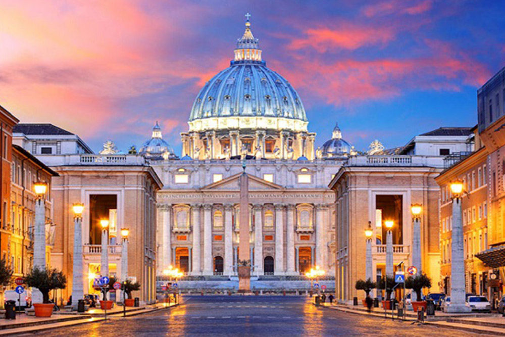
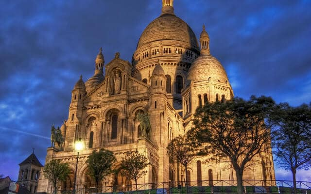

Conheça a Europa
1. Vaticano
No Vaticano lar do cristianismo nos temos a Basílica de São Pedro bem como a Capela Sistina.
2. Paris
Em Paris temos a Basílica do Sagrado Coração e a Catedral de Notre-Dame.
3. Alemanha
A Catedral de Colônia ou Colónia (alemão: Kölner Dom), é a quinta igreja mais alta do mundo e foi classificada como património da humanidade em 1996.